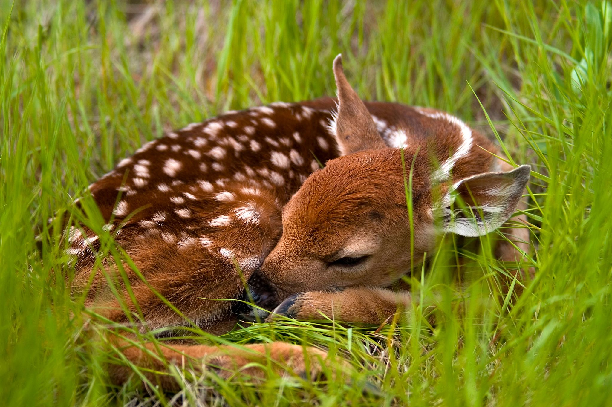

stay wild, tiger child
You made it to my Website, Welcome! I'm Kat, I love astrophysics, animals and powdery scents. Here's the link to my Github account. Blow the candle and make a wish! ₊ ˚. 🕯️ ⊹₊ ⋆
NincikOS
Time
stay wild, tiger child
Wormholes allow matter to travel through space and time, by creating a hourglass-like shape with a tube in the middle. Wormholes operate in the 4th dimension. There are different types of wormholes, theoretically, the two openings at the top would connect, basically making a loop in space and time. Wormholes depend on the theory of relativity and can only form in regions with extreme spacetime curvature, such as between two black holes.
The existence of wormholes is entirely theoretical, as there would have to be negative mass/force. They exist in various fictional books, movies and tv series, such as Stranger Things (2017), where the world of Hawkins, Indiana connects to the abyss through the upside down (the middle, tube-like part of the wormhole). But what would be outside of a wormhole? The "normal" universe, you would likely see stars and far away galaxies, but the existence of the wormhole right next to you would make them look distorted or warped, as you are literally looking through time. Interstellar (2014) is another great example. If wormholes did exist, we wouldn't be able to travel through them, because they would be smaller than an atom.
Black holes are astronomical compounds that are so compact, their gravity prevents anything from penetrating - including light. Their existance is very much real and can be found anywhere in our universe. Black Holes form, when massive stars (approximately 8 solar masses or more) exhaust their fuel at the end of their lives, causing their cores to collapse under their own gravity.
Does Time even exist? What is the definition of time? There are many differnet ones, the most popular one being Albert Einstein's. "Time is what a clock measures", said Einstein. But what if the past, present and future coexist? People think the past is set in stone and the future is yet to be discovered, but what if even the future is set in stone? Every decision you make is already predestined, every turn you take results in another, and even though there are so many choices to make, the future is already decided upon them? Even if you change your decision in the very last minute, that will have been predistened. So if you were able to see the past, present and future happening simultaniously, it would probably result in an overload, as there would be so many different choices and decisions to make, your brain could not even comprehend all of them.
Let's say you have three pigeons that you all want to simultaniously fit into two boxes, without two pigeons ever being in the same box. It seems impossible, but it's not. Not unless the pigeons are Atoms. Atoms can exist in two or more places at once, this is a phenomenon called quantum superposition. That way, all three Atoms can be fit into two boxes, wihout two atoms ever being in the same box, or one atom being outside the boxes.

Movies: Young Hearts, Star Wars, the Handmaiden, Crush, The Last Unicorn, The Summer Hikaru died, Percy Jackson & the Olympians, Black Widow, Spider Man, Alice in Wonderland, die wilden Hühner, Alien Romulus Music: Dido, Gluk'oza, Tokio Hotel, Panik/Nevada Tan, Nena, Arctic Monkeys, Lana del Rey